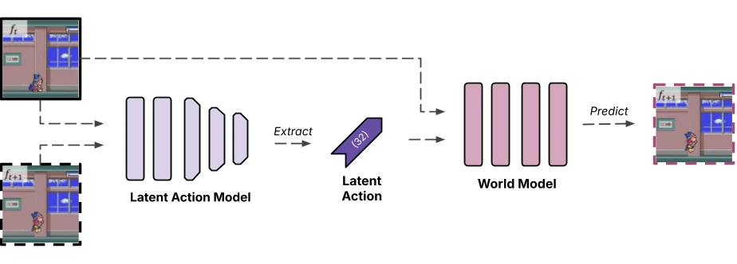
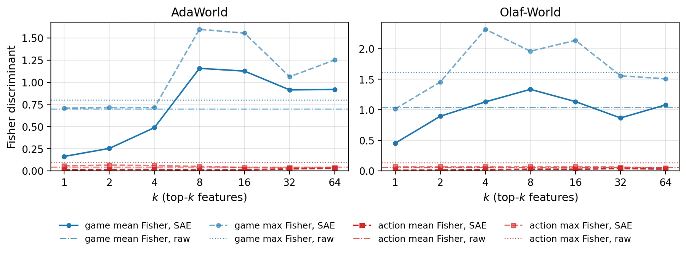
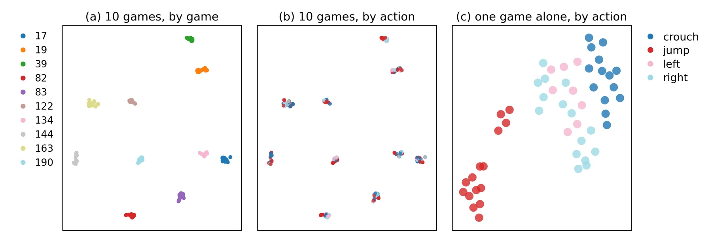

AdaWorld
LAMA Transformer autoencoder trained with a β-VAE objective. It compresses the change between two frames into a latent that a decoder uses to predict the second frame.
- Latent
- 32-d, continuous
- Input
- 2 frames · 256×256
- Size
- ~500M params
NeurIPS 2026 Workshop·PTA: From Pretrained Representations to Acting Agents
Latent action models do carry action information, and a probe can read it out inside games it was trained on. But that mapping does not carry over to new games. The strongest action signal comes from a generic video tokenizer, not from either latent action model.
Retro action accuracy (%), 4 classes. Hover a bar for details.
A latent action model squeezes the change between two frames into a small vector that stands in for the missing action. If these latents are true action primitives, move left should mean the same thing in every game.
We freeze each encoder and train small probes on its latents to predict the action: linear (MLP-0) or an MLP with 1–2 hidden layers. To measure transfer, 39 of the 193 games are held out entirely. As a control, null transitions (two identical frames) show how much accuracy comes from things other than the action.

A Transformer autoencoder trained with a β-VAE objective. It compresses the change between two frames into a latent that a decoder uses to predict the second frame.
Adds Seq∆-REPA, which aligns sequence-averaged latent actions with temporal feature differences from a frozen V-JEPA 2 encoder. The goal is consistent action meaning across visual contexts.
A general-purpose video tokenizer with no action objective at all. We repurpose it as a LAM by taking the latent frame aligned with the four action frames: up to 256 coarse-to-fine tokens × 6 channels.
We collected 193 2D platformers using Stable Retro: 98 NES, 63 SNES, 24 Master System, 7 Game Boy and 1 Atari 2600 title. Each game has 20 rollouts of 4,000 steps from a scripted controller. The task is a 4-way classification over right, left, crouch and jump.
Gameplay video from 3D games with keyboard labels. Several keys can be held at once, so the task is multi-label over 10 keys. We use the 291 sessions captured at 640×480 and split them 80/20. VideoFlexTok is not evaluated here because it needs multi-frame clips.
Present, but weak The signal is real, but it is a thin residual on top of a description of the scene.
Maybe the information is there but spread over many dimensions. We trained top-k sparse autoencoders (SAEs) on the latents and looked for single features that select for actions, with game identity as a positive control.

Yes Probes clear the baseline for every encoder and deeper probes add 16–25 points, but this does not show a shared action code across games.
| AdaWorld | Olaf-World | VideoFlexTok | |
|---|---|---|---|
| Retro · action accuracy (majority baseline 30.6–31.0%) | |||
| Linear | 45.1% | 48.7% | 65.6% |
| MLP-1 | 57.5% | 64.5% | 82.1% |
| MLP-2 | 70.4% | 73.9% | 82.2% |
| Retro · game accuracy (193 classes) | |||
| Linear | 75.8% | 83.8% | 99.2% |
| P2P · exact match, 10 keys | |||
| Linear | 26.0% | 43.9% | — |
| MLP-2 | 56.8% | 63.9% | — |
Fitting one probe per game, accuracy ranges from that game's majority baseline up to 100%. On P2P, rare keys score near zero with a linear probe but improve with depth, so the information is there even when a linear probe misses it.
Game identity is itself linearly decodable (75.8–99.2%), so a pooled probe can first work out which game it sees and then apply a game-specific rule. The latent space shows exactly this.

Largely no The capacity that helps inside the training games hurts outside them: MLP-2 loses 30–33 points and ends up below the linear probe.
One fitted probe per line. Hover for details.
Linear → MLP-2 adds 16–26 points inside the training games and removes points on unseen ones. The MLP learns game-conditioned associations, not one rule that works everywhere.
Across the 39 held-out games the median is close to the mean and the distribution is not bimodal. The probe beats 85–95% of games' own majority class, so it carries some information, but it is no usable control signal.
Same-action-different-game latents are farther apart than same-game-different-action ones: entanglement ratio 1.18 / 1.34 / 1.38 for AdaWorld / Olaf-World / VideoFlexTok.
All three representations contain an action signal (Q1), decodable wherever the probe has seen the environment (Q2). A single fitted latent-to-action mapping does not carry over to a new one (Q3). Action information is environment-specific.
Held-out samples from known environments overstate how transferable a representation is, and probe capacity makes it worse. A linear probe gives the more honest estimate.
Olaf-World beats AdaWorld on every probe, yet it has the higher entanglement ratio and the larger MLP-2 drop (−33.1 vs −30.3). The conclusion does not depend on which LAM is stronger.
VideoFlexTok has no action objective, yet decodes Retro actions best at every probe depth. Objective, width, input window and data are confounded, so we report it as an observation. A natural next step: use its latents as a LAM's alignment target.
@inproceedings{colombo2026decodable,
title = {Decodable, Not Transferable: Latent Actions Across Worlds},
author = {Colombo, Alessio and Lee, May and Oey, Elyanne and Kampono, Isabelle A. and
Frkovic, Stipe and Varghese, Dheeraj and Snoek, Cees G. M.},
booktitle = {NeurIPS 2026 Workshop on From Pretrained Representations to Acting Agents (PTA)},
year = {2026},
url = {https://openreview.net/forum?id=xm1HUPnL4w}
}